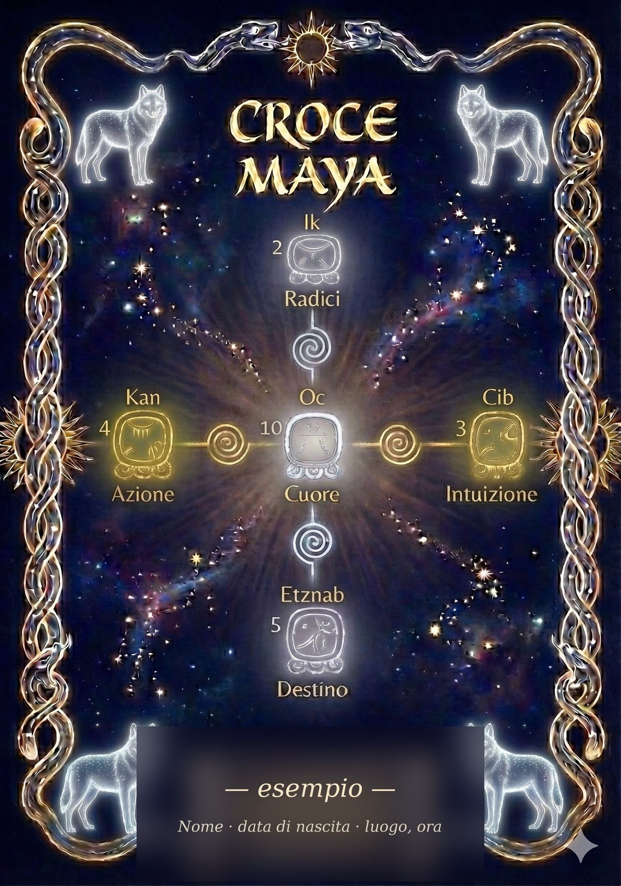

Pronto a richiedere la tua lettura?
Compila la richiesta in quattro passi. Ti consegno il PDF entro 2–3 settimane.
Uno strumento di auto-conoscenza strutturata.
Non un oroscopo. Non una previsione. Non una diagnosi. Uno specchio basato su un sistema simbolico mesoamericano di migliaia di anni — il Tzolk'in, ancora oggi in uso nelle comunità K'iche' del Guatemala.

Esempio di copertina · Ogni lettura è unica
Prima ancora di spiegarti come funziona, preferisco dirti cosa non è. È il modo più onesto per farti capire se fa per te.
Il Tzolk'in è un calendario di 260 giorni, nato nella civiltà mesoamericana e ancora oggi vivo nelle comunità K'iche' del Guatemala, dove viene usato quotidianamente dai nawales (guide cerimoniali) per ritmare la vita spirituale.
È costruito sull'intreccio di 20 glifi — energie simboliche, aspetti archetipici della psiche e dell'esperienza umana — con 13 numeri, che modulano l'intensità e la qualità con cui quell'energia si manifesta.
La combinazione dei due restituisce 260 configurazioni uniche, ognuna un "giorno" con un proprio carattere specifico. Il tuo giorno di nascita nel Tzolk'in è il punto di partenza da cui si sviluppa tutta la lettura.
Ogni lettura non è un singolo glifo ma un insieme di cinque, disposti nella figura della Croce. Ciascuna posizione illumina un aspetto diverso della persona.
Le fondamenta energetiche. Da dove parti, il patrimonio che porti al momento del tuo concepimento. La base su cui tutto il resto si costruisce.
Come agisci nel mondo. Il modo in cui realizzi, metti in pratica, porti fuori ciò che hai dentro.
Il tuo segno di nascita. Il nucleo essenziale, l'energia che ti definisce come individuo e che tutte le altre quattro posizioni circondano.
Come percepisci prima di sapere. La forma della tua intelligenza intuitiva, il tuo modo di sentire oltre il ragionamento.
La direzione verso cui sei chiamato. Non un copione già scritto, ma l'orientamento profondo della tua esistenza — il progetto da realizzare.
La lettura non tratta le cinque posizioni come elenchi separati. Le mette in dialogo — è nei loro rapporti che emerge il ritratto.
Compila la richiesta in quattro passi. Ti consegno il PDF entro 2–3 settimane.